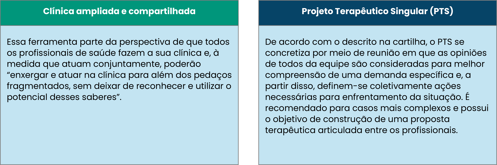

TÓPICO 03
O CUIDADO EM SAÚDE SOB A LÓGICA DO TRABALHO INTEGRADOS
TÓPICO 03
O CUIDADO EM SAÚDE SOB A LÓGICA DO TRABALHO INTEGRADOS
Algumas propostas advindas da Cartilha da Política Nacional de Humanização (BRASIL, 2007):
Reflita a partir deste exemplo:

“Se a pessoa com hipertensão é deprimida ou não, se está isolada, se está desempregada ou não, tudo isso interfere no desenvolvimento da doença. O diagnóstico pressupõe uma certa regularidade, uma repetição. Mas para que se realize uma clínica adequada é preciso saber, além do que o sujeito apresenta de igual, o que ele apresenta de diferente, de singular, inclusive, um conjunto de sinais e sintomas que somente nele se expressam de determinado modo. Com isso, abrem-se inúmeras possibilidades de intervenção, e é possível propor tratamentos muito melhores com a participação das pessoas envolvidas”

Na prática, a adesão a essa forma de cuidado, implica em estabelecer uma rotina que envolva:
- Diálogo qualificado entre profissionais das equipes envolvidas e dessas com o usuário em questão.
- Tomada de decisões compartilhadas.
Amplia-se com isso a capacidade de adesão e autonomia do usuário para se estabeleça um compromisso mútuo do cuidado.
Reflita a partir deste texto:
Pode ser desenvolvido para atender às necessidades de um indivíduo, de famílias ou de grupos. Constitui-se a partir dos seguintes momentos, a partir da seleção de caso que se adeque à elaboração do PTS: diagnóstico; definição de metas para cumprimento das propostas que emergiram, com negociação de prazos entre equipe e usuário; divisão de responsabilidades, com clara definição das tarefas alocadas a cada envolvido; reavaliação para discussão para monitoramento e readequações, quando necessário.